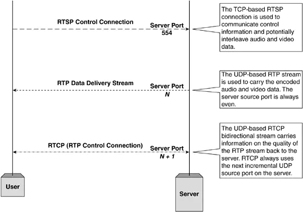

# RTSP 协议解析
# RTSP 协议介绍
RTSP组合使用了可靠传输协议TCP和或高效传输协议UDP来串流内容给用户。它支持点播和直播服务。RTSP协议本身并不负责数据传输，** 通常 (非必须)** 是通过RTP配合RTCP完成数据流和控制命令的传输。
# RTSP 协议方法
RTSP 中并没有连接的概念，而是通过会话 Session 进行管理。每个会话有对应的会话 ID，会话中可能可能涉及一至多个流，会话生命周期中，客户端也可能切换连接（如 TCP ）来传递 RTSP 请求（ request ）。
| method | direction | object | requirement |
|---|---|---|---|
| DESCRIBE | C->S | P,S | recommended |
| ANNOUNCE | C->S, S->C | P,S | optional |
| GET_PARAMETER | C->S, S->C | P,S | optional |
| OPTIONS | C->S, S->C | P,S | required(S->C:optional) |
| PAUSE | C->S | P,S | recommended |
| PLAY | C->S | P,S | required |
| RECORD | C->S | P,S | optional |
| REDIRECT | S->C | P,S | optional |
| SETUP | C->S | S | required |
| SET_PARAMETER | C->S,S->C | P,S | optional |
| TEARDOWN | C->S | P,S | required |

# RTSP 必选方法
OPTIONS
用于请求服务器中所支持的所有方法
C->S OPTIONS rtsp://video.foocorp.com:554 RTSP/1.0
CSeq: 1
S->C RTSP/1.0 200 OK
CSeq: 1
Public: DESCRIBE, SETUP, TEARDOWN, PLAY, PAUSE, RECORD
DESCRIBE
用于请求
URL指定对象的描述信息，通常描述信息使用SDP格式。C->S DESCRIBE rtsp://video.foocorp.com:554/streams/example.rm RTSP/1.0
CSeq: 2
S->C RTSP/1.0 200 OK
CSeq: 2
Content-Type: application/sdp
Content-Length: 210
m=video 0 RTP/AVP 96
a=control:streamid=0
a=range:npt=0-7.741000
a=length:npt=7.741000
a=rtpmap:96 MP4V-ES/5544
a=mimetype:string;"video/MP4V-ES"
a=AvgBitRate:integer;304018
a=StreamName:string;"hinted video track"
m=audio 0 RTP/AVP 97
a=control:streamid=1
a=range:npt=0-7.712000
a=length:npt=7.712000
a=rtpmap:97 mpeg4-generic/32000/2
a=mimetype:string;"audio/mpeg4-generic"
a=AvgBitRate:integer;65790
a=StreamName:string;"hinted audio track"
SDP协议格式SDP是一个用来描述多媒体会话的应用层控制协议，是一个基于文本的协议，用于会话建立过程中的媒体类型和编码方案的协商等。SDP描述由许多文本行组成，文本行的格式为<类型>=<值>，<类型>是一个字母，<值>是结构化的文本串，其格式依<类型>而定。v=<version> (协议版本)o=<username> <session id> <version> <network type> <address type> <address> (所有者/创建者和会话标识符)
s=<session name> (会话名称)i=<session description> (会话信息)u=<URI> (URI 描述)e=<email address> (Email 地址)p=<phone number> (电话号码)c=<network type> <address type> <connection address> (连接信息)
b=<modifier>:<bandwidth-value> (带宽信息)
t=<start time> <stop time> (会话活动时间)
r=<repeat interval> <active duration> <list of offsets from start-time>(0或多次重复次数)
z=<adjustment time> <offset> <adjustment time> <offset> ....
k=<method>k=<method>:<encryption key> (加密密钥)
a=<attribute> (0 个或多个会话属性行)a=<attribute>:<value>
m=<media> <port> <transport> <fmt list> (媒体名称和传输地址)
SETUP
用于请求
URL使用指定传输格式，必须在PLAY前发出。C->S SETUP rtsp://video.foocorp.com:554/streams/example.rm RTSP/1.0
CSeq: 3
Transport: rtp/udp;unicast;client_port=5067-5068
S->C RTSP/1.0 200 OK
CSeq: 3
Session: 12345678
Transport: rtp/udp;client_port=5067-5068;server_port=6023-6024
客户端请求中，指明了用于接收
RTP数据（音视频）的本地端口 5067，以及RTCP数据（元信息）的端口 5068。这里图示说明下RTSP（554/8554）、RTP、RTCP端口关系。
可以看到，
RTCP端口是基于RTP的，且始终为其端口值 + 1。服务器回复中，确认了客户端所请求的端口，并给出服务器端对应开辟的端口值 6023/6024。PLAY
用于请求服务器使用
SETUP中确认的机制开始传输数据，客户端不应在SETUP请求未被确认应答成功前发出PLAY请求。另外需要注意，PLAY请求是需要排队的，其中可携带Range域以指明区间。C->S PLAY rtsp://video.foocorp.com:554/streams/example.rm RTSP/1.0
CSeq: 4
Range: npt=5-20
Session: 12345678
S->C RTSP/1.0 200 OK
CSeq: 4
Session: 12345678
TEARDOWN
用于请求终止会话，将停止会话中所有相关流，并释放资源。
C->S TEARDOWN rtsp://video.foocorp.com:554/streams/example.rm RTSP/1.0
CSeq: 5
Session: 12345678
S->C RTSP/1.0 200 OK
CSeq: 5
RTSP可选方法